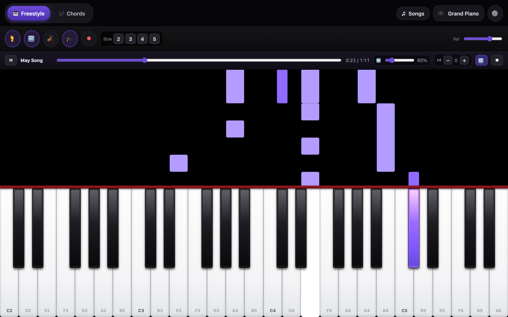
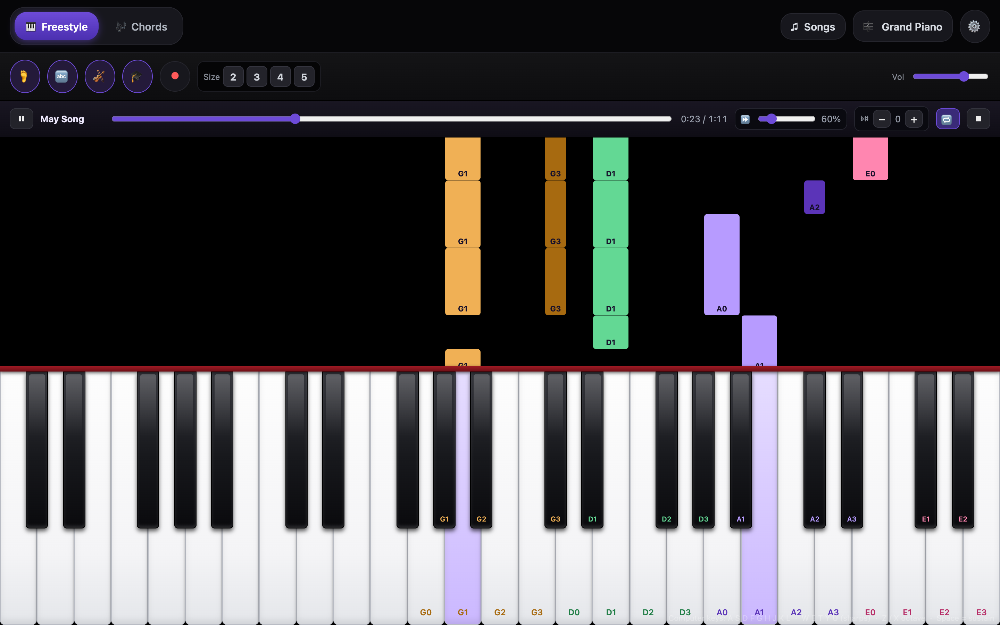

Free · no install · works offline
Practice the piece you’re stuck on.
Open a MIDI file, slow it to 60%, and loop the four bars that keep falling apart. The notes fall onto the keys so you can see what’s coming instead of guessing.
Built-in pieces to start with · your own .mid files · USB MIDI keyboard · violin fingering

Three things, one screen
No menus to dig through. The tempo, the loop, and the notes are all where you’re already looking.
Open a piece
Pick one of the built-in songs, or drop in your own .mid file — the one your teacher sent, or anything you found.
Slow it down
Pull the tempo to 40–60% and loop just the bars you keep missing. Speed it back up when it holds together.
Play along
Notes fall onto the keys. Labels tell you what to press; violin mode turns them into string and finger.
What’s in it
Small on purpose. Everything below runs in the browser — no account, no upload to a server.
Your own MIDI files
Standard .mid files play locally in the tab. Nothing is uploaded anywhere.
Tempo and loop
40–150% speed, seek anywhere, loop a range until the passage stops falling apart.
USB MIDI keyboard
Plug in a keyboard and play the on-screen instrument with real keys. Web MIDI, no driver.
Violin fingering
Toggle violin mode to label keys and falling notes by string and finger, first position.
Works offline
Install it to your home screen once; it keeps working when the wifi doesn’t.
Record and export
Capture what you played and export it as a .mid to keep or share.
If you play violin
The piano is the accompaniment, but the notes are still piano notes. Hit 🎻 and every key and falling bar is labelled the way you actually think: G1, D3, A0 — string, then finger.
Each string gets its own colour, and notes that fall outside first position stay unlabelled rather than inventing a shift that isn’t there.

Questions
Do I need a MIDI file to start?
No. There are built-in pieces — May Song, Long, Long Ago, Clair de Lune, Canon in D — so the app does something the moment it loads. Upload your own file when you have one.
Do I need a MIDI keyboard?
No. You can click or tap the keys, or use the computer keyboard (A–L for white keys, W–U for sharps). A USB MIDI keyboard works in Chrome and Edge if you have one.
Is it really free?
Yes. No account, no install, no ads. It’s a static site — the whole app is a few files served from GitHub Pages.
Does it work on a phone?
Yes. It runs in landscape and can be added to your home screen. On a phone the keyboard is narrower, so use the size control to show fewer octaves.
What does violin mode actually do?
It relabels the keyboard and the falling notes with string and finger — G0–G4, D0–D4, A0–A4, E0–E4 — and colours each string differently. Notes outside first position are left unlabelled.
Does it grade my playing or read sheet music?
No. It’s a practice aid, not a teacher: it shows you the notes and keeps time. You still have to listen.